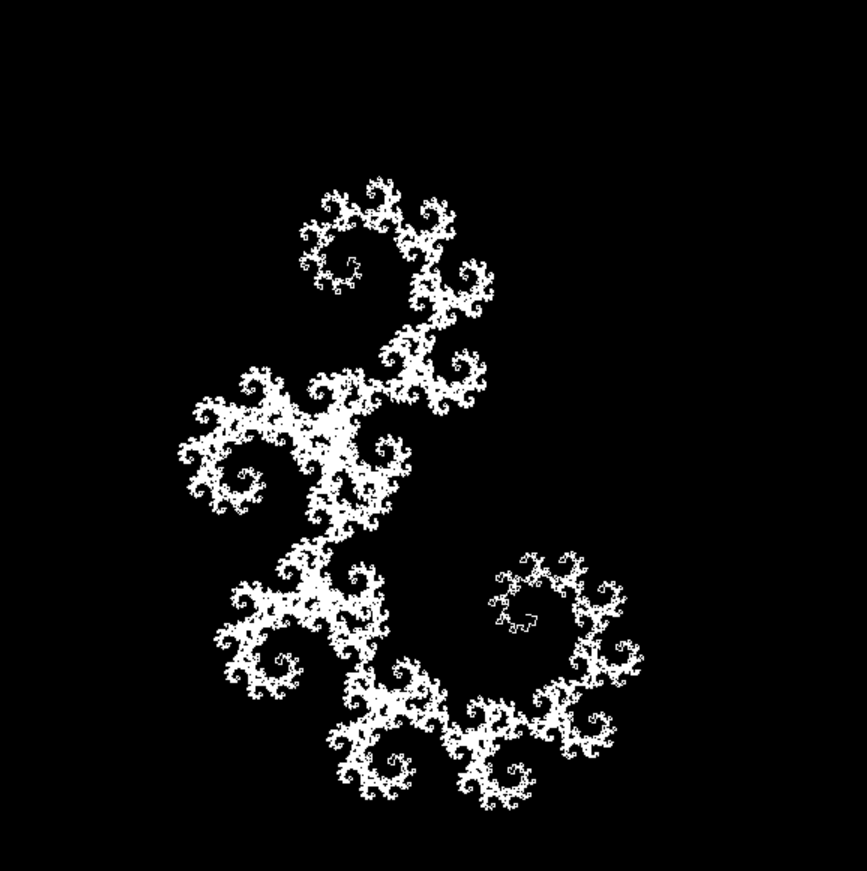

Home
Back
This page has some coding projects I made in my own time and some as part of college work and some insternships I was involved in.
Something delaunay triangulation
Something qunatum computing inspired
Project and report in Finite Element Analysis
Summer internship in cosmology and machine learning
Little project from a computational physics class
Pygame simulation of 2d gravity with extra bits
Generation of simple fractals
Visualisation of the Lorenz attractor
Circles go BRRR
Electic Fields of point particles
While you ponder which one to pick first here is a picture of a cool
fractal
.
